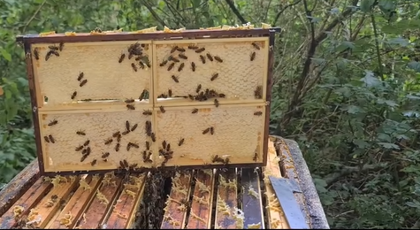

Imker Springe - Natürlicher Wabenhonig
Entdecken Sie die Welt des reinen, unverfälschten Wabenhonigs direkt vom Hobbyimker aus Springe. Regionaler Honig in bester Qualität.
Über mich
Dr. Abdulrahman Kattan
Arzt & Hobbyimker aus Springe
Ich bin approbierter Arzt und betreibe in meiner Freizeit eine kleine, naturverbundene Hobbyimkerei in Springe (31832). Die Arbeit mit den Bienen ist für mich Ausgleich, Verantwortung und Freude an der regionalen Natur.
Auf dieser Seite finden Sie frische Eindrücke aus der Imkerei Springe, Fakten rund um Bienen & Honig sowie Kontaktmöglichkeiten. Wabenhonig kaufen direkt vom Imker.
Fakten über Bienen & Honig
🐝 Fleißige Sammler
Eine Biene besucht bis zu 5.000 Blüten pro Tag und fliegt dabei bis zu 85 km weit.
🍯 Natürliche Konservierung
Honig ist praktisch unbegrenzt haltbar durch seinen niedrigen Wassergehalt und pH-Wert.
🌻 Bestäubungsleistung
Ein Bienenvolk bestäubt täglich mehrere Millionen Blüten und sichert unsere Ernten.
💎 Kristallisation ist normal
Wenn Honig kristallisiert, ist das ein Zeichen für Qualität und Reinheit. Echter Honig kristallisiert natürlich mit der Zeit und dies schadet der Qualität nicht.
Wabenhonig kaufen in Springe - Produkte & Preise
Honig direkt vom Imker in Springe. Nur Abholung. Solange der Vorrat reicht.
Kleines Wabenstück ideal als Geschenk
Festes, aromatisches Wabenhonigstück direkt aus dem Rähmchen. Ein natürlicher Genuss direkt aus der Wabe.
20€ pro Stück

Ganzes Rähmchen (ca. 2 kg)
Komplettes Wabenhonigrähmchen für echte Liebhaber. Perfekt für besondere Anlässe und Kenner.
20€ pro kg
Kontakt
Dr. Abdulrahman Kattan
📍 Springe (31832, Niedersachsen)
📧 imkerhobbyspringeabdul@gmail.com
Hinweis: Nur Abholung in Springe möglich.